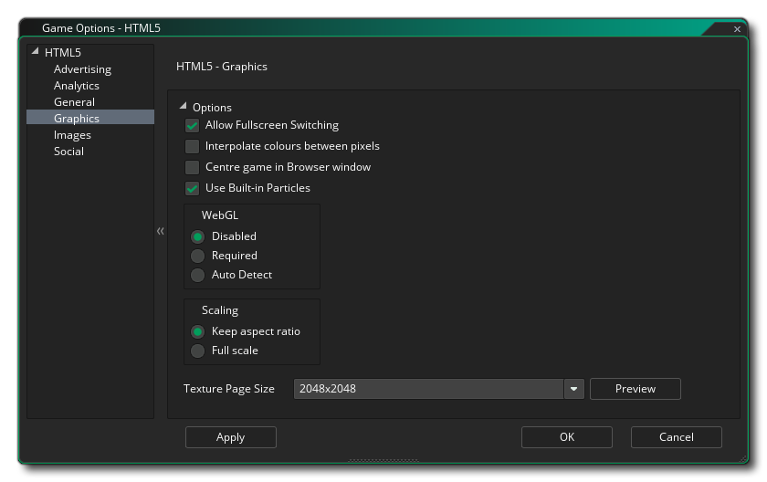

In diesem Abschnitt werden die verschiedenen Optionen beschrieben, die Ihnen zur Verfügung stehen, um zu steuern, wie Ihre HTML5-Spielprojekte kompiliert werden. Die verschiedenen Abschnitte sind:
In diesem Abschnitt haben Sie Felder zum Ausfüllen der folgenden Informationen zu Ihrem Spiel:
- Browsertitel: Hier können Sie Text angeben, der für die Titelleiste der Registerkarte für Ihr Spiel im Browser verwendet werden soll.
- Version: Die Versionsnummer für Ihr Projekt.
- Name des Ordners: Der Name des Ordners, in dem Ihre HTML5-Spieldateien gespeichert werden (Standardeinstellung ist "html5game").
- Ausgabename: Dies ist der Name der Ausgabe-HTML-Datei und kann in einen anderen Wert als die Standardeinstellung "index.html" geändert werden.
Unter den Spielinformationsfeldern haben Sie auch die folgenden Optionen:
- Ausgabe Debug - Konsole: Dadurch werden alle Debug - Ausgabe an die JS - Konsole Ihres Browsers senden. Dies ist standardmäßig deaktiviert.
- Cursor anzeigen: Dadurch wird der Mauszeiger deaktiviert, wenn er sich über der Spielfläche befindet. Dies ist standardmäßig aktiviert.
- Warnmeldung "Außerhalb des Servers ausführen" anzeigen: Wenn Sie ein Spiel lokal testen (z. B. das Klicken auf die Indexdatei von Ihrem Computer statt eines Servers - nicht empfohlen), erhalten Sie normalerweise eine Warnung, die Sie darüber informiert, dass dies nicht funktioniert Sie können aufgrund der Browsersicherheit für lokale Dateien erwarten. Sie können diese Warnung unterdrücken, indem Sie diese Option deaktivieren. Es ist standardmäßig aktiviert.
Unter den allgemeinen Einstellungen stehen Ihnen die erweiterten Optionen zur Verfügung:
- Enthaltene Datei als index.html: Dies ist zum Hinzufügen einer benutzerdefinierten "index.html" -Datei, die anstelle der vordefinierten Datei verwendet wird, die GameMaker Studio 2 standardmäßig generiert. Dies kann sehr nützlich sein, wenn Sie ein Website-Design implementiert haben oder bestimmte Funktionen in alle HTML5-Builds integrieren möchten. Die zu verwendende Datei muss als eingeschlossene Datei im Spielprojekt enthalten sein.
- Bar - Extension laden: Dies wird die Standardladebalken für eine Änderung, die zu Ihrem hinzugefügt wurde GameMaker Studio 2 Projekt als Erweiterung.
- Ausgabe voranstellen .js: Hier können Sie die voranstellen *.js Ausgabe mit zusätzlichem JavaScript, das für Ihr Spiel erforderlich ist. Beispielsweise muss eine Chrome Store-App möglicherweise hinzugefügt werden window.localStorage = undefined; an die Ausgabe JS, für die Sie diese Option verwenden würden.
In diesem Abschnitt können Sie Analysen zu Ihrem Spiel hinzufügen, und Sie können bestimmte Produkte von Drittanbietern verwenden, um Ihr Spiel und seine Verkäufe oder Spiele zu verfolgen. Sie können angeben, ob Sie Flurry Analytics oder Google Analytics verwenden möchten, um Ihr Spiel zu verfolgen. Aufgrund der Natur dieser Funktionen kann jeweils nur eine aktiv sein. Wenn Sie die Option "Flurry-Analyse aktivieren" oder " Google Analytics aktivieren" markiert haben, sollten Sie auch die eindeutige ID hinzufügen, die Sie im entsprechenden Bereich zugewiesen haben.
Weitere allgemeine Informationen zur Analyse finden Sie in der YoYo Wissensdatenbank. Informationen zu den Funktionen, die Sie zum Senden von Analysedaten verwenden können, finden Sie hier.

Hier können Sie die folgenden Details ändern, die sich darauf beziehen, wie Ihr Spiel angezeigt wird. Beachten Sie, dass nicht alle Browser Ihr Spiel auf dieselbe Weise anzeigen. Testen Sie diese Optionen daher auf möglichst vielen Browsern, um sicherzustellen, dass sie die gewünschte Wirkung haben.:
- Umschalten auf den Vollbildmodus: Wenn Sie diese Option aktivieren, kann der Benutzer mit <STRG> + <CMD> + <F> auf dem Mac und F10 unter Windows vom Fenstermodus in den Vollbildmodus umschalten. Dies ist standardmäßig aktiviert.
- Farben zwischen Pixeln interpolieren: Aktiviert die Interpolation, wodurch die Pixel im Wesentlichen "geglättet" werden. Für gestochen scharfe Pixelgrafiken sollte diese Einstellung deaktiviert sein. Wenn Sie jedoch schöne Alpha-Überblendungen und geglättete Kantengrafiken haben, sollten Sie diese Einstellung lieber beibehalten. Standardeinstellung ist deaktiviert.
- Spiel im Browser zentrieren: Wenn Sie diese Option aktivieren, wird der Bildschirm des Spiels automatisch innerhalb des Browsers zentriert, der das Spiel ausführt.
- Eingebaute Partikel verwenden Mit dieser Option werden die für das eingebaute Partikelsystem erforderlichen Sprites zusammen mit Ihrem Spiel exportiert. Diese Sprites werden in einzelnen Textur-Seiten gespeichert. Dies bedeutet, dass sie nicht die effizienteste Methode zum Generieren von Partikeln für diese Plattform sind. Daher wird empfohlen, diese Option zu deaktivieren (sofern WebGL nicht verwendet wird) und Ihre eigenen Partikel-Sprites zu verwenden auf den wichtigsten Textur-Seiten für Ihr Spiel gespeichert.
- WebGL: Wählen Sie aus, ob Sie die WebGL-Unterstützung deaktivieren, sie optional machen (automatische Erkennung) oder für Ihr Spiel erforderlich machen möchten. Es sollte beachtet werden, dass zum Testen der Leistung unter allen Umständen diese Option deaktiviert sein sollte und dann normalerweise für die automatische Erkennung für die Veröffentlichung festgelegt werden sollte. Wenn Sie dies zu einer Anforderung machen, kann dies die Kompatibilität Ihres Spiels mit verschiedenen Browsertypen erheblich beeinträchtigen.
- Skalieren: Ihr Spiel kann so konfiguriert werden, dass die Zeichenfläche automatisch skaliert wird, um das Seitenverhältnis im Browser beizubehalten, oder Sie können auswählen, dass die Streckung an die Größe angepasst wird. Mit der Option zum Ausdehnen wird das Spiel im Browser nicht im Vollbildmodus dargestellt, sondern es wird die Zeichnung so vergrößert, dass sie der Leinwandgröße entspricht, wie im ersten Raum des Spiels definiert.
Schließlich gibt es noch die Möglichkeit, die Größe der Textur-Seite einzustellen. Die Standardgröße (und die meisten kompatiblen) beträgt 2048 x 2048, aber Sie können zwischen 256 x 256 und 8192 x 8192 wählen. Es gibt auch eine Schaltfläche Vorschau, die die Textur-Seiten für diese Plattform generiert und ein Fenster öffnet, in dem Sie sehen können, wie sie aussehen. Dies kann sehr nützlich sein, wenn Sie die Struktur der Textur-Seiten sehen möchten und verhindern möchten, dass Textur-Seiten größer (oder kleiner) als erforderlich sind.
HINWEIS: Beachten Sie, dass Ihr Spiel umso weniger kompatibel ist, je größer die Texturseite ist.
In diesem Abschnitt können Sie das Favicon und den Begrüßungsbildschirm definieren. Das Symbol sollte als erstellt werden *.ico Datei und kann eine Größe von 16 x 16, 32 x 32, 48 x 48 oder 64 x 64 Pixel sowie eine Farbtiefe von 8 Bit, 24 Bit oder 32 Bit haben. Der Begrüßungsbildschirm sollte der Größe der Leinwand entsprechen, die Ihr Spiel aufnehmen soll, und wird alle Ladebalken überschreiben, wenn Sie die Option Splash-Bildschirm verwenden aktivieren (dh Sie können einen Ladebalken ODER einen Begrüßungsbildschirm haben, aber nicht beide).. Kleinere oder größere Bilder sind zulässig, werden jedoch skaliert.
Beachten Sie, dass GameMaker Studio 2 über ein Project Image Generator- Tool verfügt, mit dem automatisch alle Bilder erstellt werden können, die für die verschiedenen Zielplattformen benötigt werden, auf denen Ihr Spiel kompiliert wird. Wenn Sie dieses Tool verwenden, sollten Sie die erstellten Bilder überarbeiten, um sicherzustellen, dass sie Ihren Anforderungen entsprechen.
Der Social-Tab wird verwendet, um die Facebook-Kommunikation in Ihrem Spiel einzurichten. Wenn Sie die Facebook-Funktionen benötigen, müssen Sie das Kontrollkästchen "Facebook verwenden" aktivieren und anschließend die Facebook-App-ID und den Facebook-App-Anzeigenamen angeben. Beachten Sie, dass auf alle Facebook-Funktionen über eine Erweiterung zugegriffen werden kann. Wenn Sie das Kontrollkästchen Facebook verwenden zum ersten Mal aktivieren, werden Sie aufgefordert, die Facebook-Erweiterung vom Marketplace herunterzuladen und zu installieren (möglicherweise müssen Sie sich bei Ihrem YoYo Konto anmelden, bevor sie heruntergeladen werden kann.).